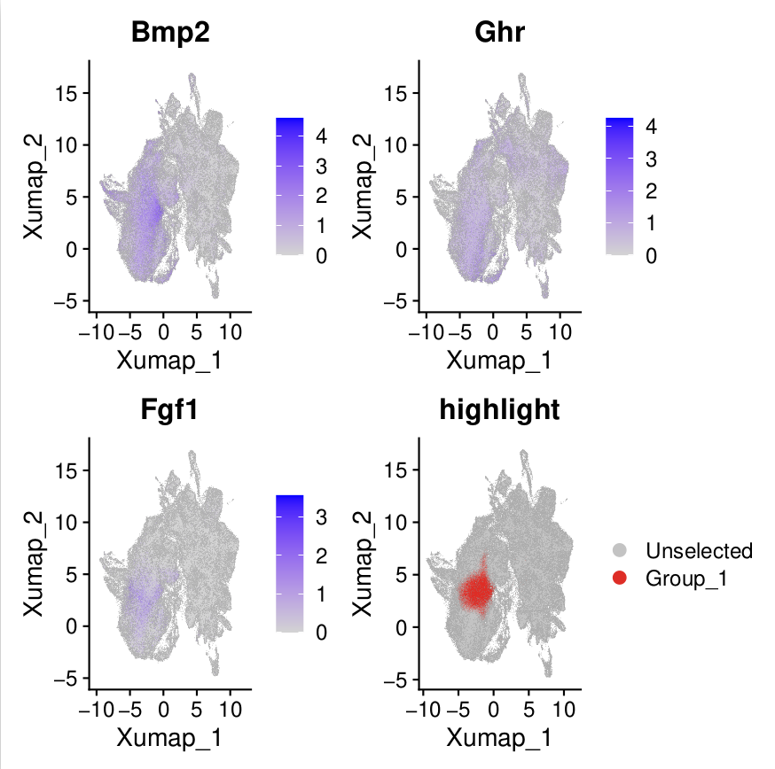
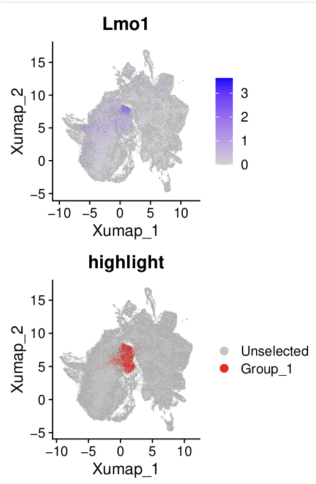
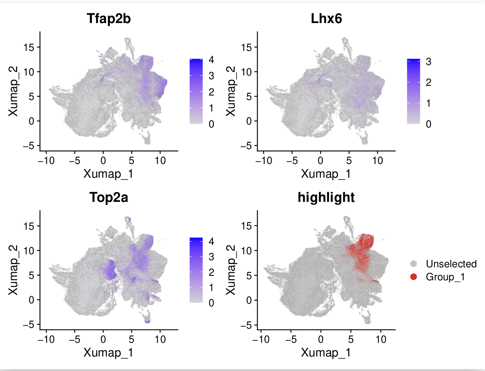
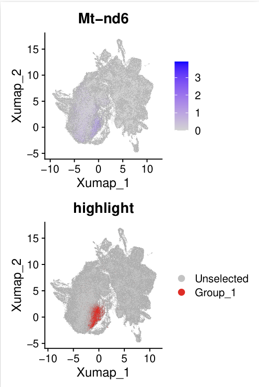

Level 3 Annotation#
Motivation#
In level 3 annotation, we aim to identify subclusters of mesenchyme cells.

Osteoblast#
We discovered a cell cluster that highly expresses osteogenesis markers, such as Cd200 [Debnath et al., 2018], Alpl [Liu et al., 2018], and Ifitm5 [Ayturk et al., 2021].

Cementoblast#
Our atlas also identified cementoblasts, which express Pthlh [Nagata et al., 2021], Tubb3 [Nagata et al., 2021], Ibsp [Hermans et al., 2022], and MMp13 [Hermans et al., 2022].

Pre-odontoblast#
We named this cluster based on the following reasons:
It was located near the odontoblast in the reduction.
It exhibited high expression of genes associated with differentiation-related signaling pathways. 
Coronal Papilla#
We annotated the coronal papilla based on the expression of Lmo [Jing et al., 2022]. 
Kit+ Papilla#
This cluster highly expresses Kit and Pclo, aligning with results from this study [Zheng et al., 2024].

Cycling Mesenchyme#
This subcluster of mesenchyme expresses cell cycle-related genes, such as Top2a. It also expresses early mesenchyme marker genes, such as Tfap2b and Lhx6 [Jing et al., 2022]. 
C1qtnf3+ Mesenchyme#
We identified a cluster that specifically expresses C1qtnf3, aligning with the study [Hu et al., 2022].

Tfap2b+ Mesenchyme, Hic1+ Mesenchyme, Pax3+ Mesenchyme#
These clusters were mainly annotated based on their marker genes.

High-Mito#
This cluster of cells highly expresses mitochondrial-related genes, which may be related to technical bias. 
Low Quality 2#